← 返回阅读库 · 原论文目录
论文讲解阅读文档 · 表征学习 · v170
MONet Unsupervised Scene Decomposition and Representation[1901.11390]
视频时长 00:13:42；讲解文字 5,936 字符；提取讲解画面 40 张。按视频原顺序阅读，每段文字保留时间戳。
文字来自整段视频的自动语音转写，按自然停顿分段，并与 PPT / 论文页面 / 演示画面对齐。未将讲解压缩为摘要；术语、数字和口述公式请结合画面及原论文核对。 阅读稿已校正规范部分明确术语误识别；原始逐字稿和每处修改记录另行保留。
讲解画面为源视频截图（640×360），不是可编辑 PPT 文件。全片按每秒 2 帧扫描内容变化，逐步展开页保留；连续动画保留代表画面。清晰度受源视频限制。
下载完整资料包 · 含离线 HTML、PDF、Word、全部 PPT 画面和字幕。
原论文与材料
MONet: Unsupervised Scene Decomposition and Representation · 下载完整 PDF（22 页）
按时间阅读
00:00:00–00:00:29 · 画面 001
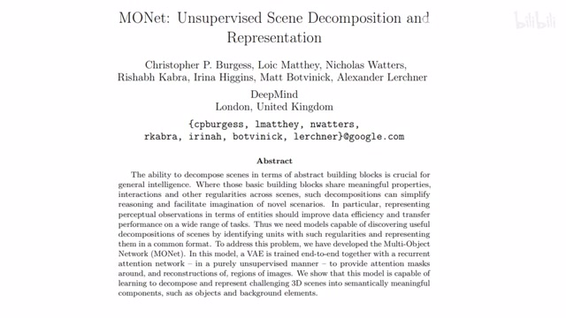
00:00:00–00:00:29 · 画面 001大家好,今天我们来快速说一篇论文 MONet: Unsupervised Scene Decomposition and Representation。它就是希望通过一种非监督的方式把我们一张图像给它拆分出来，然后每一个拆分的部分有自己的 representation。那么当然当我们介绍完这篇论文之后，你再对比这个 slot attention，你发现这篇文章相对于 slot attention 有非常多的局限。好了,那么我们直接来看那么本文的目的呢，正如我们之前说的，是要用一种非监督的方法把我们这个场景给它分开来。这个分开呢，它不一定说一定要跟这个物件绑定啊，只是说把我们的这个场景按照这个语义的信息分成不同的部分。那么这里核心处理的方法呢，一样也是我为不同的这个语义的这个物件给它创造相应的这个 slot，然后呢，每一个 slot 去重建相应的一个物件就可以了。
00:00:29–00:01:42 · 画面 002
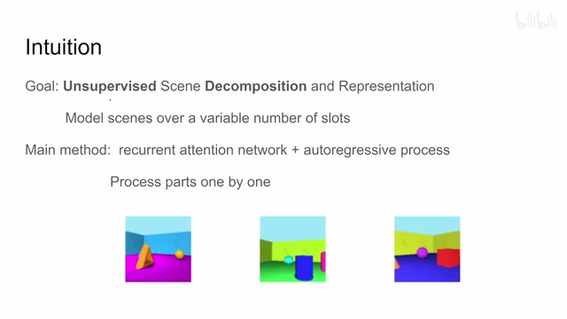
00:00:29–00:01:42 · 画面 002那具体来说呢，作者用了这个 recurrent 这个网络，其实这个网络并不是 recurrent，只是他不断的去往这个网络里面送东西，就是循环的去走这个网络而已。所以呢，它是一个 auto-regressive 的这样一个方法，而且呢，每次经过这个网络的时候呢，我们只处理一件东西。那所以你看到呢，就是本文的这个方法呢，它在处理很多个物件的时候，它的顺序是固定的就是相对于这个 slot attention 来说。
本文这个模型输出的这个 slot 呢，它的顺序呢是不能改变的。那么一般来讲呢，第一个 slot 呢是做这个背景，那后面呢就是不同的 object。那么下面呢，我们就继续来看作者的使用的这个网络包括他的训练的 loss 是怎么样的一个形式。那首先一个网络啊，看起来非常唬人啊，我们继续来看，因为它是一个 recurrent 对吧，不断的把这个图像放回到我们这个网络里面，所以呢，我们只要看它每一个 step 就好了，我们在这里切开。
00:01:42–00:02:29 · 画面 003
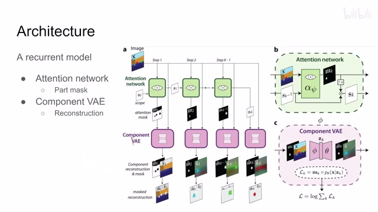
00:01:42–00:02:29 · 画面 003我们看到图像进来，先进了一个 attention network，这个 attention network 同时呢也拿了一个叫做 scope 的东西，把这两个拿了之后呢，我们产生了新的 scope 和一个 attention mask。这个 mask 和原始图像这里过来，原始图像送到了一个叫做 component VAE 里面，这个 VAE 呢重建出了这个 mask 还有一个图像。然后呢，我们把这个重建后的这个 mask 和图像呢对吧结合起来。
这里有一个重建的结果，这个结果呢就可以和我们原始的图像产生一个非监督的这么一个 loss。这个呢是在一个 step 中发生的事情。那么既然是 recurrent，我们就可以把这个过程重复很多遍对吧，重复重复重复。
00:02:29–00:02:30 · 画面 004
00:02:29–00:02:30 · 画面 00400:02:30–00:02:32 · 画面 005
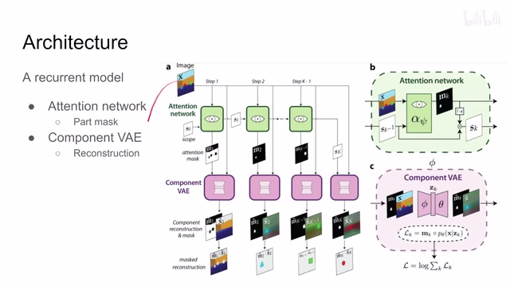
00:02:30–00:02:32 · 画面 00500:02:32–00:02:38 · 画面 006
00:02:32–00:02:38 · 画面 00600:02:38–00:02:43 · 画面 007
00:02:38–00:02:43 · 画面 007那每一次重复呢，我们都希望他重建出一个物体来。那么重复到最后呢，整颗这张图像就被我们解释分解完毕了啊。这个是一个很直接的那么一个思路。那么下面呢，我们就来看这个网络里面涉及的这个重要的两个部分，一个是 attention，一个是这个 component vae，他们是怎么运行的。那首先呢是这个 attention network，注意这里的 attention network 呢，只是说他的目的是 attention，他使用的机制并不是 attention。
00:02:43–00:02:44 · 画面 008
00:02:43–00:02:44 · 画面 00800:02:44–00:02:58 · 画面 009
00:02:44–00:02:58 · 画面 00900:02:58–00:03:03 · 画面 010
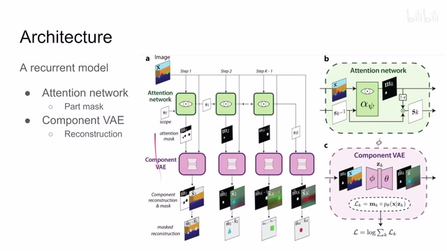
00:02:58–00:03:03 · 画面 01000:03:03–00:03:56 · 画面 011
00:03:03–00:03:56 · 画面 011那它这里的本质上呢，是一个 U-Net、U-Net，它的参数呢，我们假设叫它这个 set。然后呢，它的这个输入呢，是我们原始图像加上一个叫做 scope 这个东西，scope 这个东西呢，是一个单通道的一个 mask，它呢用来控制说我们这个 step 它看到哪一部分的图像，或者换句话来说就是我上一个 step 分割过的图像已经拿走的部分，我这个 step 就不要处理了。
这个 scope 呢，就是做这样一个作用。所以你可以把它理解成这是一个这个网络它内部的一个 memory 哦对吧，其实很直接的这么一个就是表示我这层网络处理范围的这么一个东西。那么他把这个四通道的图像对吧拿进来，拿到 unet 里面，输出呢，输出一个两通道的图像。那这个两通道的图像呢，包括 attention mask 和这个 scope。那么更具体来看呢，这个 alpha 这个 file 是我们的这个网络。
00:03:56–00:03:57 · 画面 012
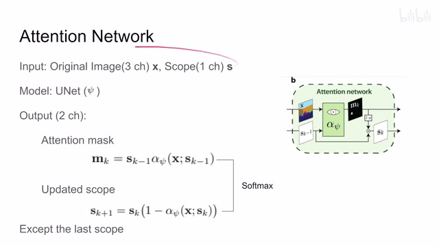
00:03:56–00:03:57 · 画面 01200:03:57–00:05:38 · 画面 013
00:03:57–00:05:38 · 画面 013他把我们的输入弄起来，然后呢，输出的一个图像乘上我们上一个 step 的这个 scope，也就是说我这一个 step 只需要处理上一个 step 剩下的这个没有处理的部分就可以了，上一个 step 已经处理过的东西呢，我们这个 step 呢就不用考虑了。这是这个 scope 它的目的然后呢产生了一个 attention maskattention mask 呢就是希望是我这一个 step 需要处理的物体的这样一个 mask 相当于原来一个大蛋糕对吧每一个 step 分出一小部分分出一小部分分出这一部分呢就叫做 attention mask 那么既然已经分出这一个部分了对于我的下一个 step 来说它的这个 scope
要在当前这个 scope 的基础上减去我这一步产生的 attention mask 也就是说我这个 step 它处理这么一个 attention mask 的这么一个物件那么对于下一个 step 来说我就不需要再处理这个物件了所以把它从这个 scope 里面给它减去那么显然这两个图像它们尺寸一样而且是一个此消彼长的过程所以它们的和应该是 1 这里做着用一个 softmax 就把这个限制给它加好了那么这样子呢你每个 step 每个 step 都先去做这个 attention 就可以了但是呢这里呢有一个例外在我们最后一次执行这个 step 的时候呢啊我们希望我们把整个的这个图都处理掉
就是你相当于切到蛋糕切到最后剩下这块都给你了对吧所以呢最后一步呢就不用再产生这个 attention mask 就是整个这个 attention network 就可以省略掉了直接呢把这个最后的 scope 当做这个 mask 送给我们下游的 vae 去做重建就可以了那么这个呢是这个 attention network 它的原理呢是非常简单的那么拿到这个 mask 之后呢我们就可以开始重建了就相当于 mask 告诉我们我们要重建这个图像中的哪一部分
00:05:38–00:05:40 · 画面 014
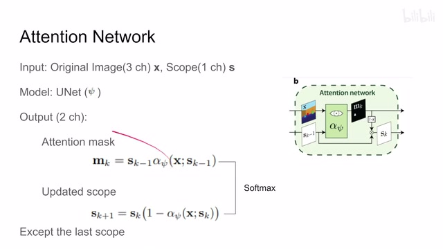
00:05:38–00:05:40 · 画面 01400:05:40–00:05:50 · 画面 015
00:05:40–00:05:50 · 画面 01500:05:50–00:05:52 · 画面 016
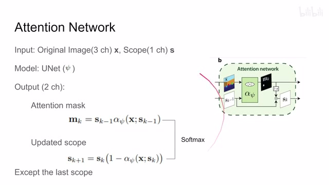
00:05:50–00:05:52 · 画面 01600:05:52–00:05:54 · 画面 017
00:05:52–00:05:54 · 画面 01700:05:54–00:07:53 · 画面 018
00:05:54–00:07:53 · 画面 018下面我们就要根据这一部分专门提这一部分的 feature 去重建这一部分那么来到我们这个 component VAE 它的输入和输出都是原始的图像加上 mask 这个 mask 就是从我们 attention 在图表里面过来的既然是 VAE encoder 和 decoder 都在有但是因为有 mask 的存在我们施加 loss 的时候需要做一点小的改动我们来看到 encoder 的表达式它的输出是 latent representation 它的输入条件是原始的图像加上 mask 那么对于 decoder 来说它还有一个 positional embedding 具体的 VAE 的细节你可以去看它的代码不是标准的 VAE 是 VAE 的改版核心是要把 latent representation 给它 broadcast 到一个大的一个 feature 然后再做这个感兴趣的朋友去看它的代码时间细节我们这里就不详细讲
那么它呢是根据这个 z 来重建出这个 x 这个呢是这个 decoder 作用但是呢这个事还没完因为呢我们还要通过这个 z 去重建出这个 mask 所以呢这个 decoder 呢这个表达式呢只是这一部分用来做这个原始图像重建的这么一个东西那么同时呢这个 decoder 呢还会输出这个重建的 mask 哎为什么我们要这么干呢在后面我们介绍这个具体 loss 的时候呢我们会仔细讲这个事情但是现在呢我们可以先把它理解成这是一个简单的 decoder 啊然后呢我们就开始算 loss 对吧 VAE 我们之前也介绍过了一个是 reconstruction loss 让我们的这个 decoder 的结果变得和这个原始图像很像对吧另一个呢是这个 KL divergence 让我们的这个 latent representation 接近这个 Gaussian distribution 对的改进吧 beta-VAE 嘛我们也介绍了
是调整这 KL divergence 和这个 reconstruction loss 他们之间这个权重这个是训练这个 VAE reconstruction 的部分那么但是正如我们之前提到的我们为什么有一个 mask 因为我们只希望这个 VAE 去重建这个 mask 标记过的物件没有标记的这个物件呢我们不关心所以呢你看到这里在计算 reconstruction loss 的时候呢我们把这个输了这个 mask 给它放到了这里这样子呢我们只计算有 mask 部分的这个 reconstruction loss
00:07:53–00:07:54 · 画面 019
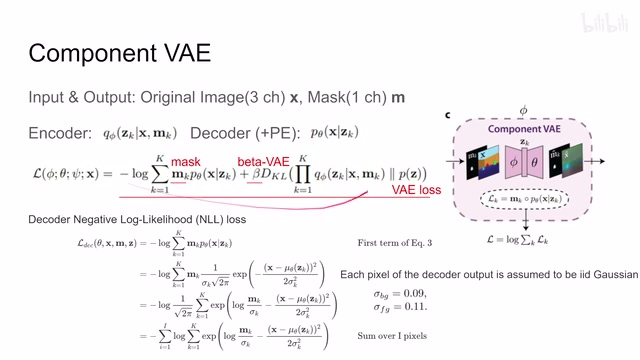
00:07:53–00:07:54 · 画面 01900:07:54–00:08:29 · 画面 020
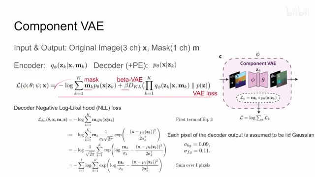
00:07:54–00:08:29 · 画面 020这个是一个很直接的一个改动此外还有一点不同就是 reconstruction loss 它用的不是 L1 或者 L2 它用的是 negative log likelihood 为什么这么搞呢作为假设说我们的 decoder 出来的每个像素它是独立的高斯分布那么有了这个假设之后我们这个条件概率就可以写成 Gaussian distribution 这样一个形式其中这个 µθ 就是我们的 decoderDecoder 拿到 this representation
00:08:29–00:08:32 · 画面 021
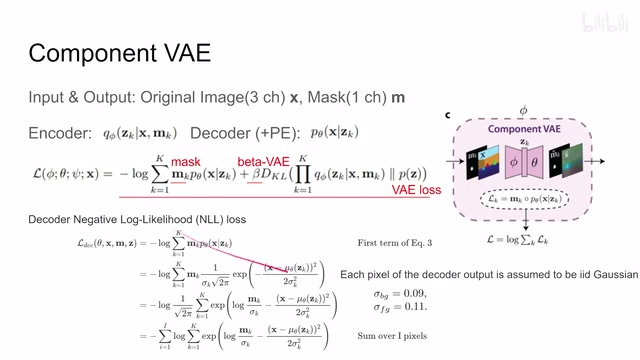
00:08:29–00:08:32 · 画面 02100:08:32–00:08:36 · 画面 022
00:08:32–00:08:36 · 画面 02200:08:36–00:08:37 · 画面 023
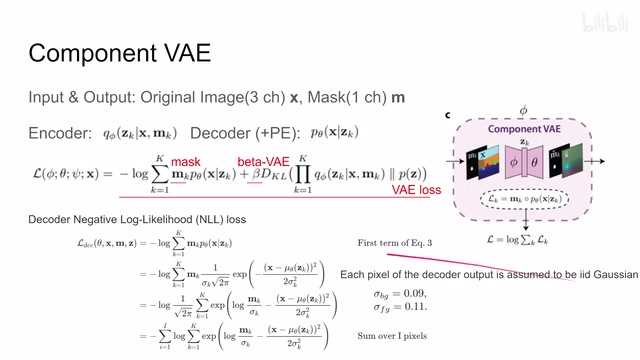
00:08:36–00:08:37 · 画面 02300:08:37–00:09:50 · 画面 024
00:08:37–00:09:50 · 画面 024这一块呢是给我们做了一个 prediction 和这个 prediction 和这个 x ground truth 的这个 likelihood 就是因为是 gaussian distribution 嘛就是这样一个形式那么然后你再化解化解就可以了那这里还有一个问题就是我们假设这个每个像素的值呢是 gaussian distribution 那么 gaussian distribution 呢它的均值好说我就直接取这个像素的这个值 x 就可以了但是它的交叉怎么办呢这里做着说一个经验的值在我网络运行的第一个 step 我认为它会处理整个这个图像里面的所有的背景这个时候它给了背景的 z 档那么在后面的 step 当中从第二 step 开始一直往后的所有 step 我认为它开始处理前景图像这里用的标准差是另一个值这是做着训练中的一些小的细节
那最后呢对于每个像素来求和就是这个 Decoder 这个 Negative Log Likelihood 啊这一点呢跟我们这个 L1 呢是不太一样的那么再往下呢就到我们这个全局的这个所有的 loss 给它总装起来了因为我们的网络中两个部分一个是这个 VAE 一个是 Attention 那刚好我们只介绍了这个 VAE 的部分 Attention 的部分应该怎么处理呢这里呢我们 VAE 输出的这个 Mask 它就有用了
00:09:50–00:10:00 · 画面 025
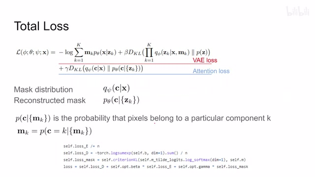
00:09:50–00:10:00 · 画面 02500:10:00–00:10:02 · 画面 026
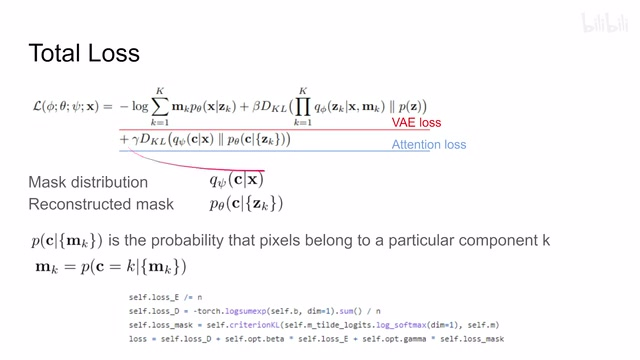
00:10:00–00:10:02 · 画面 02600:10:02–00:10:38 · 画面 027
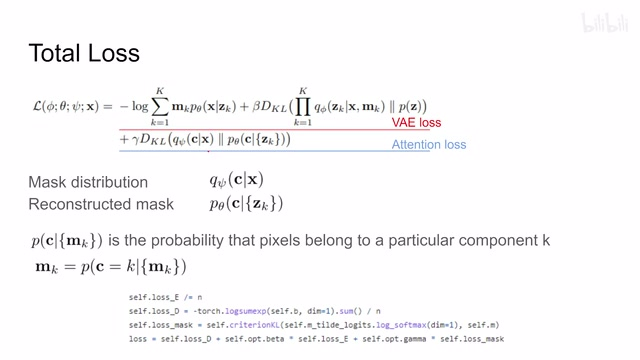
00:10:02–00:10:38 · 画面 027这里我们首先假设每一个像素它属于一个特定 component 特定一个物件的它的概率我们把它看成是一个随机变量叫做 C 那么这个概率写成这样一个形式对于 mask 来说它就可以表示成我正好取到第 k 个 component 时候的事件的这样一个条件概率那么这个概率呢相当于我们中间的一个目标是有一个实际意义的具有定义的这么一个式子那么如果回到 attention network 那么从我们的这个 attention network 它的视角来说呢我们是根据原始图像去估计这个变量 C 而从我们这个 VAE 的视角来说呢我们是通过这个 latent representation 这个 bottleneck 去估计这个 C 那虽然我们不知道也不在意说这个 C 它本质的 distribution 是什么
00:10:38–00:10:39 · 画面 028
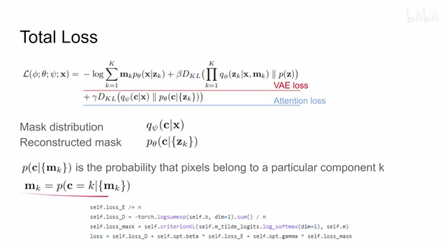
00:10:38–00:10:39 · 画面 02800:10:39–00:11:32 · 画面 029
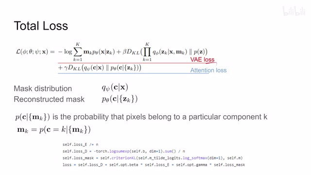
00:10:39–00:11:32 · 画面 029但是呢我们只要从这个 attention 估计出来这个 distribution 和从这个 VAE 估计出来这个 distribution 它们两个相互 match 那就可以了非常巧妙的一个 loss 的设计通过这样一个中间的变量把这两个网络呢就给它结合起来了那么 kl divergence 那么如何衡量两个概率分布的这个相似程度呢简单这个 kl divergence 那具体的实现来看这个 kl divergence loss 我们的 target 呢是我们的这个 attention mask
也就是这个 self.m。那我们的这个输入呢是这个 VAE 的这个预测是这个东西。那么通过这样一个 loss 呢，我们不仅有梯度走向这个 VAE，同时呢也有梯度通过这个 mask，也就是这个部分走向我们的这个 attention。那么加上我们之前的专门的给 VAE 的 loss，这样子呢，就把我们整个网络的这个 loss 给它训练出来了。那这个呢，就是本文最核心的这个 loss 的设计。
00:11:32–00:11:33 · 画面 030
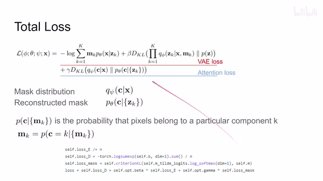
00:11:32–00:11:33 · 画面 03000:11:33–00:11:49 · 画面 031
00:11:33–00:11:49 · 画面 03100:11:49–00:11:50 · 画面 032
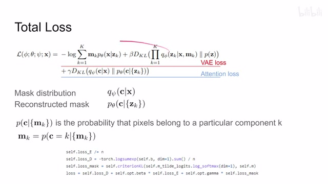
00:11:49–00:11:50 · 画面 03200:11:50–00:11:55 · 画面 033
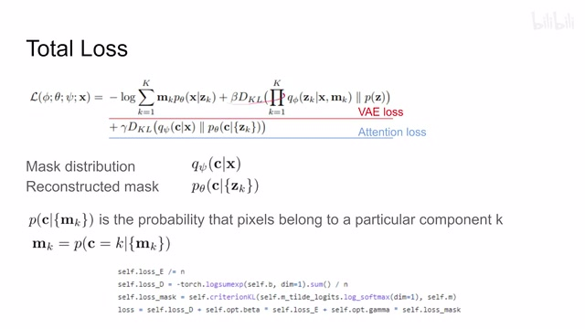
00:11:50–00:11:55 · 画面 03300:11:55–00:11:57 · 画面 034
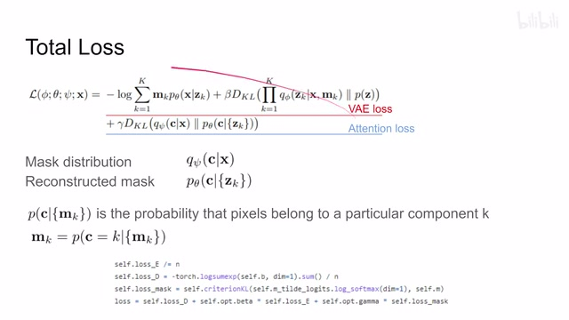
00:11:55–00:11:57 · 画面 03400:11:57–00:12:01 · 画面 035
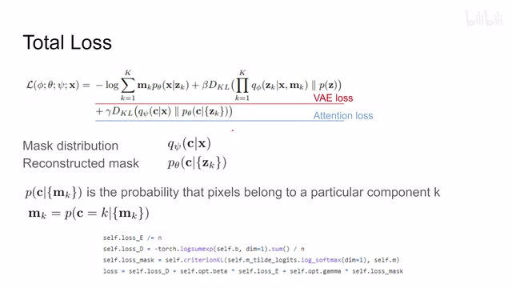
00:11:57–00:12:01 · 画面 035那下面呢，我们来看作者汇报一些结果吧。首先呢，是这个 empirical validation。作者这里主要探讨的是呢，我一开始的 scope 给成什么样子，它呢对我们的这个结果会有什么影响。那假如说我们一开始这个 scope 它什么信息都没有，就是一张纯色的这个 mask，它呢能够做出一定程度的这个重建。但是你看重建出来这个结果呢，远看有这个意思啊，但是实际的细节呢很不到位。
00:12:01–00:12:06 · 画面 036
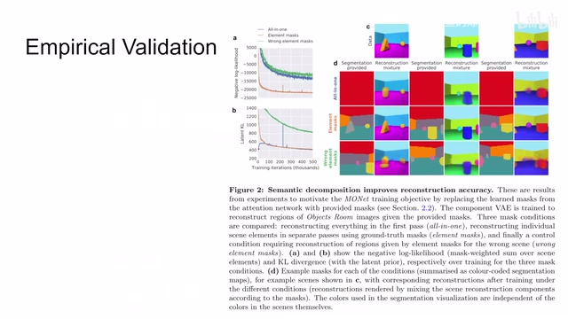
00:12:01–00:12:06 · 画面 03600:12:06–00:12:59 · 画面 037
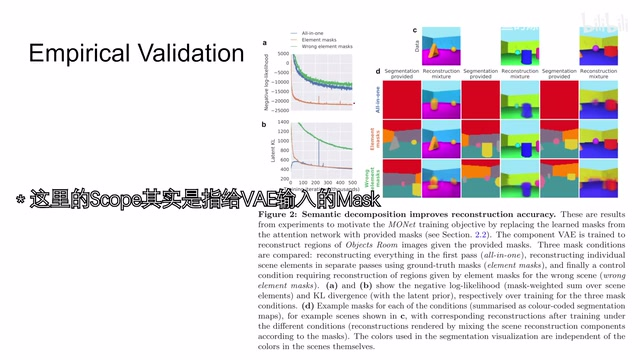
00:12:06–00:12:59 · 画面 037假如说我们提供正确的每一个物件这样一个 mask，那么这里可以看到重建的效果是非常好的。当然毕竟这也是相对简单的这么一个图像。但是如果我们使之外给一些错误的 mask，本本方法虽然图像质量有下降，而且这些细节基本就完全失去了，但是你看它大概的意思跟原始图像还是有那么几分相似。所以在侧面印证说，本文的方法对于我们 scope 对于这个 attention network 它是有一定鲁棒性的。那这边呢可以追踪一下他训练过程中的这种各种 loss 是一个挺直白的这么一个实验结果。那最后呢，作者汇报了他们使用的这种各种的数据集对吧，还有一些可视化，你可以看到他们每一次迭代也就是每一个 slot 他的这个重建的结果还有他预测出来的这个 mask。
00:12:59–00:13:06 · 画面 038
00:12:59–00:13:06 · 画面 03800:13:06–00:13:42 · 画面 039
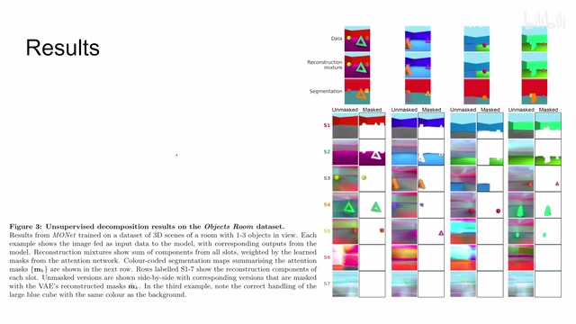
00:13:06–00:13:42 · 画面 039对吧，基本能够达到我们把每一个物件这么给它分开的这样一个目的。同时多出来这个 slot 呢也并不影响我们这个图像的画纹。所以总的来说呢，这篇文章是一个非常有意思的尝试，它在构建 loss 的时候呢有很多 trick 呢是我们可以参考。那么以上呢就是我对这个论文的一个快速的介绍，感谢您的收看，再见。
00:13:42–00:13:42 · 画面 040
00:13:42–00:13:42 · 画面 040转写与来源说明 · 0 个自动复核提示
保留 31 个原始语音片段，0 个片段触发自动复核提示。提示仅用于定位可能的术语、重复或识别问题，不等于已确认错误。
讲解画面为源视频截图（640×360），不是可编辑 PPT 文件。全片按每秒 2 帧扫描内容变化，逐步展开页保留；连续动画保留代表画面。清晰度受源视频限制。
原视频：paper/合集_2026-10-16_表征学习/[论文简析]MONet Unsupervised Scene Decomposition and Representation[1901.11390].mp4
SHA-256：b27021f0b8151495230b0c4012452e35bb87cc31b674c63ecd0845beaf36b6d5
全文按视频语音与画面制作。原论文可从上方链接下载；完整资料包保留全文、原始逐字稿、字幕和校对记录。